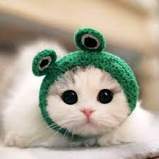

Я Валиев Ильназ
Моя почта: ilnaz_valiev_2005@mail.ru
Мой университет!

Нижневартовский государственный университет (НВГУ) — современное образовательное учреждение, расположенное в городе Нижневартовске, Ханты-Мансийском автономном округе — Югра. Университет был основан в 2003 году и с тех пор активно развивается, предлагая программы бакалавриата, магистратуры и аспирантуры в различных областях, таких как экономика, право, педагогика, гуманитарные науки, технические и естественные науки. НВГУ ориентирован на подготовку профессионалов, отвечающих требованиям рынка и современной экономики. В университете созданы современные учебные корпуса, лаборатории и студенческие центры, а также развивается научная деятельность. Среди целей университета — обеспечение качественного образования и развитие региональной науки и культуры.
Сайт университета
Моя группа
Моя группа состоит из 30 человек. Учимся мы на факультете Фитим(Факультет информационных технологий и математики), на 3 курсе.
Группа достаточно большая и очень дружная.
Все друг с другом хорошо взаимодействют и стараются помогать друг другу с различными задачами, будь то лабораторные работы или мероприятия.
Моя будущая профессия
Моя будущая профессия связана с разработкой программного обеспечения. В настоящее время я активно изучаю языки программирования, такие как C++, Java и Python, а также изучаю основы веб-технологий, включая HTML. Я мечтаю стать профессиональным программистом и создавать качественные и полезные программы, которые смогут облегчить жизнь людей и решить реальные задачи. В будущем я хотел бы заниматься разработкой различных видов ПО, расширяя свои навыки и становясь экспертом в этой области.
Мои увлечения и хобби
Мне интересны многие темы и занятия, но полноценных увлечений и хобби у меня не так много.
Увлечени и хобби, которыми я больше всего увлекаюсь:
- Тренировки в зале
- Просмотр фильмов
- Компьютерные игры
- Прогулки с друзьями
- Решение головоломок по типу Кубика Рубика
Любая другая информация
Котики


